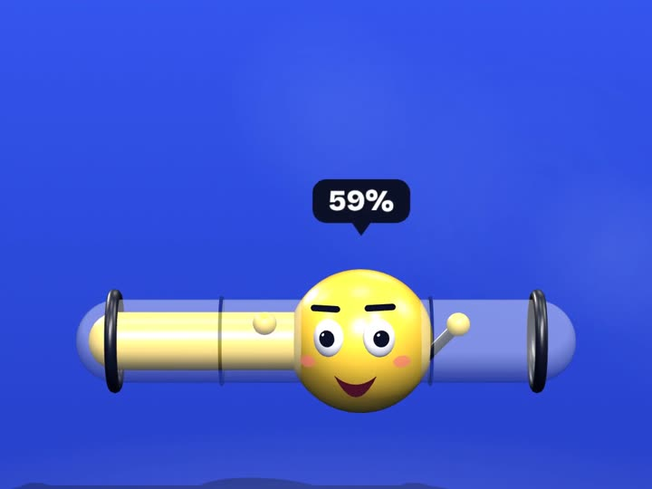
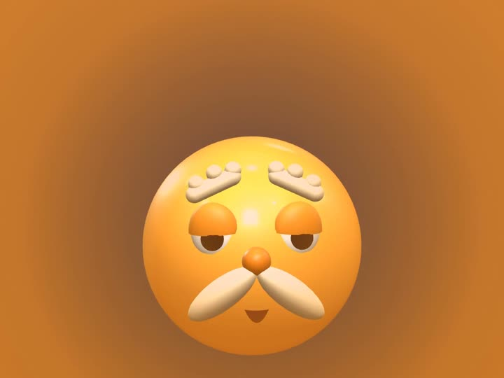
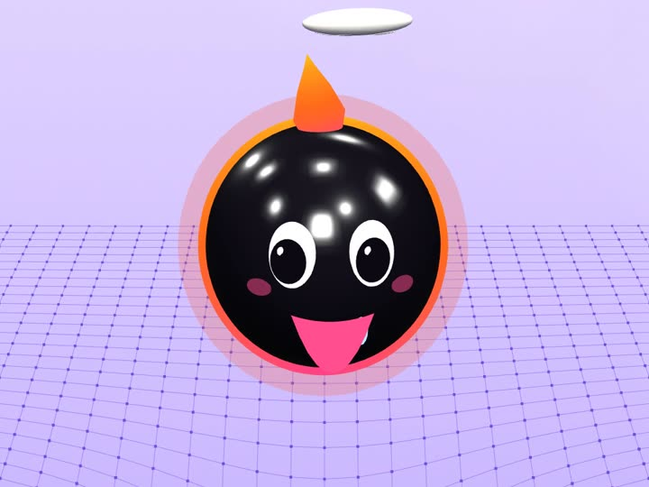
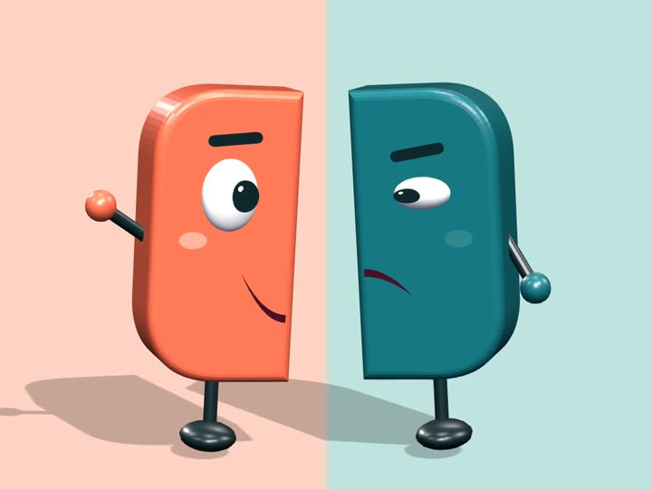
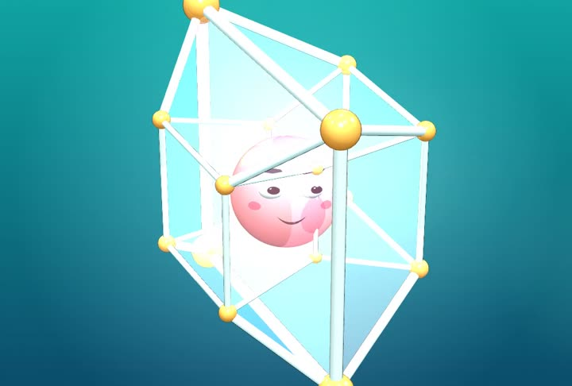
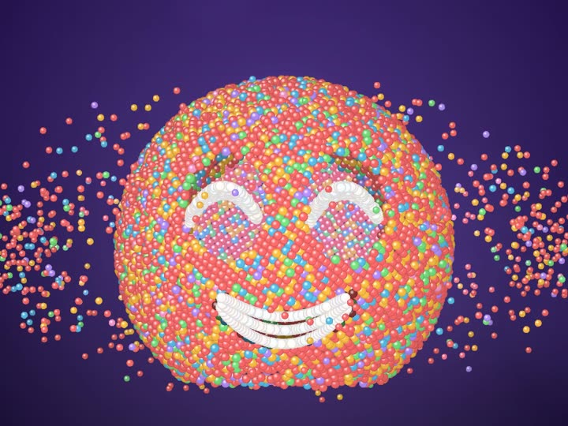

- Filed byInspector Oob
- Subjecthumans
An alien is auditing humans.
Inspector Oob files one 30-second report on one human habit. Clapping. Queues. Your cat. Each report ends with a stamped verdict, and every fact in it has a source.
Reports filed so far
-
001
Clapping
Humans strike their own hands in groups. Nobody decides when it ends. They all simply stop.
Absurd -
002
Your cat
A small predator kept indoors. It knows its name and chooses not to answer. In return, it vibrates.
Approved -
003
The queue
No fence, no guard, no law. Skip ahead and the others say nothing. They only stare.
Under review -
004
Small talk
Inspection in progress.
Oob's colleagues
Oob covers humans. Six others cover everything else, also in 30 seconds.






Every fact has a source
If a video states a number, it is listed here with where it came from. Found a mistake? Tell us and we will fix the video.
Inspector Oob
- Applause spreads through a crowd like a contagion, and so does stopping. Mann, Faria, Sumpter & Krause (2013), Journal of the Royal Society Interface.
- Cats tell their own names from similar words. Saito et al. (2019), Scientific Reports; reported by Scientific American.
Percy
- Sealed honey barely spoils: little water, high acidity, and an enzyme from bees. Smithsonian Magazine, "The Science Behind Honey's Eternal Shelf Life".
- One second is 9,192,631,770 periods of a caesium atom, defined in 1967. BIPM, Resolution 1 of the 13th CGPM.
- Loading bars: many count finished tasks, not time. This describes common installers, not a universal rule.
Old H
- The universe was opaque for about 380,000 years. NASA Science, Universe overview.
- The Sun's core is about 15 million °C, where hydrogen fuses into helium. NASA Science, Our Sun: Facts.
Gulp
- Without the Moon: tides about a third, darker nights, an unstable tilt. EarthDate, "What If There Were No Moon?"; Physics World, "What's in a moon".
- A grapefruit-sized black hole holds about seven Earths. Worked out from NASA Imagine the Universe: Earth squeezed to a 9 mm radius would be a black hole.
- Not even light escapes a black hole. NASA, What Are Black Holes?
Yup & Nope
- A hippo can reach about 30 km/h on land over short distances. Leibniz Institute IGB Berlin. Some zoos quote lower figures.
- Bacteria can transfer to dropped food in under a second; moisture and surface matter. Miranda & Schaffner (2016), Applied and Environmental Microbiology.
- Mars: gravity 38% of Earth's, air about 95% carbon dioxide, average temperature near minus 60 °C. NASA/JPL, Mars at a glance; ESA, Facts about Mars.
Tess
- Tess's tricks are standard four-dimensional geometry. The flat-world explanation comes from Edwin Abbott's "Flatland" (1884).
Murmur
- About 8.3 billion people; roughly 59% live in Asia and 19% in Africa; about four births and two deaths every second. United Nations, World Population Prospects 2024.
- About 117 billion people have ever been born. Population Reference Bureau, "How Many People Have Ever Lived on Earth?"
We make these for brands
Vidatu is produced by SellnShip Solutions in Chandigarh. Every character here is built and animated in code, so a new 30-second film takes days, not months.
We write the script, check the facts, animate, voice and caption it, and hand you a file that is ready to post.
Email us about a video